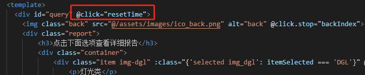
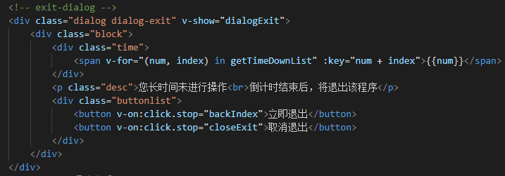

CONTENT OUTLINE 对开发过程中常见的与JavaScript相关的问题进行汇总
– JS全局点击事件
– 在JS中引入外部JS
– JS中的call、apply、bind方法
– 日期操作汇总
– 奇葩操作
一、JS全局点击事件 在书写提示弹窗的时候，有可能去利用事件冒泡去捕获弹窗外的点击，然后去关闭该弹窗
写在全局的点击事件

弹窗部分代码

但是，写在全局的点击事件会造成很多麻烦，为后期迭代维护造成障碍。
只需要将点击捕获事件放置到提示弹窗的遮罩层上即可
另外，针对于写在全局的点击事件，也可以用阻止事件冒泡的方式 去补窟窿
两种方法 ①原生方法阻止事件穿透 1 2 3 4 5 6 7 8 9 10 <div @click="testout($event)> <div @click=" testin($event)"></div> </div> ....... testin(event) { ...... event.stopPropagation(); },
②.stop修饰符 下面的例子中，将会先弹出“noclick”,再弹出“dodo”
1 2 3 4 5 6 7 8 9 10 11 12 13 14 15 16 17 18 19 20 21 22 <div id="app"> <div v-on:click="dodo"> <button v-on:click="doThis">阻止单击事件继续传播</button> </div> </div> <script> var app = new Vue({ el: "#app", data: { name: "Vue.js" }, methods: { doThis: function () { alert("noclick"); }, dodo: function () { alert("dodo"); } } }); </script>
修改为
1 2 3 4 5 <div id ="app" > <div v-on:click ="dodo" > <button v-on:click.stop ="doThis" > 阻止单击事件继续传播</button > </div > </div >
只弹出“noclick”
二、在JS中引入外部JS 在js文件中引入（调用）另一个js文件的三种方法
方法一，在调用文件的顶部加入下例代码
1 2 3 function addScript (url ) document .write("<script language=javascript src=" +url+"></script>" ); }
注：有时你引用的文件还可能需要引用其他的js,我们需要将需要的那个js文件也以同样的方法引用进来。
方法二，在js中写如下代码：
1 2 3 4 5 6 function addScript (url ) var script = document .createElement('script' ); script.setAttribute('type' ,'text/javascript' ); script.setAttribute('src' ,url); document .getElementsByTagName('head' )[0 ].appendChild(script); }
利用document.createElement(”script”)生成了一个script的标签，设置其 type属性为text/javascript。
方法三，利用es6中export和import实现模块化
一个js文件代表一个js模块 。ES6引入外部模块分两种情况：
1.导入外部的变量或函数等；
1 import {firstName, lastName} from './test' ;
2.导入外部的模块，并立即执行
三、JS中的call、apply、bind方法 转载自 博客园
bind 是返回对应函数，便于稍后调用；apply 、call 则是立即调用 。
apply与call 在 javascript 中，call 和 apply 都是为了改变某个函数运行时的上下文（context）而存在的 ，换句话说，就是为了改变函数体内部 this 的指向。
JavaScript 的一大特点是，函数存在「定义时上下文」和「运行时上下文」以及「上下文是可以改变的」这样的概念。
1 2 3 4 5 6 7 8 9 10 11 function fruits ( fruits.prototype = { color: "red" , say: function ( console .log("My color is " + this .color); } } var apple = new fruits;apple.say();
但是如果我们有一个对象banana= {color : “yellow”} ,我们不想对它重新定义 say 方法，那么我们可以通过 call 或 apply 用 apple 的 say 方法：
1 2 3 4 5 banana = { color: "yellow" } apple.say.call(banana); apple.say.apply(banana);
所以，可以看出 call 和 apply 是为了动态改变 this 而出现的，当一个 object 没有某个方法（本栗子中banana没有say方法），但是其他的有（js本栗子中apple有say方法），我们可以借助call或apply用其它对象的方法来操作。
apply与call 区别 对于 apply、call 二者而言，作用完全一样，只是接受参数的方式不太一样 。例如，有一个函数定义如下：
1 var func = function (arg1, arg2 )
就可以通过如下方式来调用：
1 2 func.call(this , arg1, arg2); func.apply(this , [arg1, arg2])
其中 this 是你想指定的上下文，他可以是任何一个 JavaScript 对象(JavaScript 中一切皆对象)，call 需要把参数按顺序传递进去，而 apply 则是把参数放在数组里。
apply与call 实例 数组之间追加 1 2 3 4 5 6 7 8 9 10 var array1 = [12 , "foo" , {name :"Joe" } , -2458 ]; var array2 = ["Doe" , 555 , 100 ]; Array .prototype.push.apply(array1, array2); Array .prototype.push.call(array1, array2);
获取数组中的最大值和最小值 1 2 3 var numbers = [5 , 458 , 120 , -215 ]; var maxInNumbers = Math .max.apply(Math , numbers), maxInNumbers = Math .max.call(Math ,5 , 458 , 120 , -215 );
number 本身没有 max 方法，但是 Math 有，我们就可以借助 call 或者 apply 使用其方法。
验证是否是数组（前提是toString()方法没有被重写过） 1 2 3 functionisArray(obj){ return Object .prototype.toString.call(obj) === '[object Array]' ; }
类（伪）数组使用数组方法 1 var domNodes = Array .prototype.slice.call(document .getElementsByTagName("*" ));
Javascript中存在一种名为伪数组的对象结构。比较特别的是 arguments 对象，还有像调用 getElementsByTagName , document.childNodes 之类的，它们返回NodeList对象都属于伪数组。不能应用 Array下的 push , pop 等方法。
但是我们能通过 Array.prototype.slice.call 转换为真正的数组的带有 length 属性的对象，这样 domNodes 就可以应用 Array 下的所有方法了。
面试题 定义一个 log 方法，让它可以代理 console.log 方法，常见的解决方法是：
1 2 3 4 5 function log (msg ) console .log(msg); } log(1 ); log(1 ,2 );
上面方法可以解决最基本的需求，但是当传入参数的个数是不确定的时候，上面的方法就失效了，这个时候就可以考虑使用 apply 或者 call，注意这里**传入多少个参数是不确定的**，所以使用apply是最好的，方法如下：
1 2 3 4 5 function log ( console .log.apply(console , arguments ); }; log(1 ); log(1 ,2 );
接下来的要求是给每一个 log 消息添加一个”(app)”的前辍，比如：
该怎么做比较优雅呢？这个时候需要想到arguments参数是个伪数组，通过 Array.prototype.slice.call 转化为标准数组，再使用数组方法unshift ，像这样：
1 2 3 4 5 6 function log ( var args = Array .prototype.slice.call(arguments ); args.unshift('(app)' ); console .log.apply(console , args); };
bind 在讨论bind()方法之前我们先来看一道题目：
1 2 var altwrite = document .write;altwrite("hello" );
结果：Uncaught TypeError: Illegal invocation
1 altwrite.bind(document )("hello" )
当然也可以使用call()方法：
1 altwrite.call(document , "hello" )
绑定函数 bind()最简单的用法是创建一个函数，使这个函数不论怎么调用都有同样的this值 。常见的错误就像上面的例子一样，将方法从对象中拿出来，然后调用，并且希望this指向原来的对象。如果不做特殊处理，一般会丢失原来的对象。使用bind()方法能够很漂亮的解决这个问题：
1 2 3 4 5 6 7 8 9 10 11 12 13 14 15 this .num = 9 ; var mymodule = { num: 81 , getNum: function ( console .log(this .num); } }; mymodule.getNum(); var getNum = mymodule.getNum;getNum(); var boundGetNum = getNum.bind(mymodule);boundGetNum();
bind() 方法与 apply 和 call 很相似，也是可以改变函数体内 this 的指向。
MDN的解释是 ：bind()方法会创建一个新函数，称为绑定函数，当调用这个绑定函数时，绑定函数会以创建它时传入 bind()方法的第一个参数作为 this，传入 bind() 方法的第二个以及以后的参数加上绑定函数运行时本身的参数按照顺序作为原函数的参数来调用原函数。
直接来看看具体如何使用，在常见的单体模式中，通常我们会使用 _this , that , self 等保存 this ，这样我们可以在改变了上下文之后继续引用到它。 像这样：
1 2 3 4 5 6 7 8 9 10 var foo = { bar : 1 , eventBind: function ( var _this = this ; $('.someClass' ).on('click' ,function (event ) console .log(_this.bar); }); } }
由于 Javascript 特有的机制，上下文环境在 eventBind:function(){ } 过渡到 $('.someClass').on('click',function(event) { }) 发生了改变，上述使用变量保存 this 这些方式都是有用的，也没有什么问题。
当然使用 bind() 可以更加优雅的解决这个问题：
1 2 3 4 5 6 7 8 9 var foo = { bar : 1 , eventBind: function ( $('.someClass' ).on('click' ,function (event ) console .log(this .bar); }.bind(this )); } }
在上述代码里，bind() 创建了一个函数，当这个click事件绑定在被调用的时候，它的 this 关键词会被设置成被传入的值（这里指调用bind()时传入的参数）。
因此，这里我们传入想要的上下文 this(其实就是 foo )，到 bind() 函数中。然后，当回调函数被执行的时候， this 便指向 foo 对象。再来一个简单的栗子：
1 2 3 4 5 6 7 8 9 var bar = function ( console .log(this .x); } var foo = { x:3 } bar(); var func = bar.bind(foo);func();
这里我们创建了一个新的函数 func，当使用 bind() 创建一个绑定函数之后，它被执行的时候，它的 this 会被设置成 foo ， 而不是像我们调用 bar() 时的全局作用域。
偏函数（Partial Functions） bind()的另一个最简单的用法是使一个函数拥有预设的初始参数 。只要将这些参数（如果有的话）作为bind()的参数写在this后面。当绑定函数被调用时，这些参数会被插入到目标函数的参数列表的开始位置 ，传递给绑定函数的参数会跟在它们后面。
1 2 3 4 5 6 7 8 9 10 11 function list ( return Array .prototype.slice.call(arguments ); } var list1 = list(1 , 2 , 3 ); var leadingThirtysevenList = list.bind(undefined , 37 );var list2 = leadingThirtysevenList(); var list3 = leadingThirtysevenList(1 , 2 , 3 );
和setTimeout一起使用 1 2 3 4 5 6 7 8 9 10 11 12 13 14 15 function Bloomer ( this .petalCount = Math .ceil(Math .random() * 12 ) + 1 ; } Bloomer.prototype.bloom = function ( window .setTimeout(this .declare.bind(this ), 100 ); }; Bloomer.prototype.declare = function ( console .log('我有 ' + this .petalCount + ' 朵花瓣!' ); }; var bloo = new Bloomer();bloo.bloom();
注意：对于事件处理函数和setInterval方法也可以使用上面的方法
绑定函数作为构造函数 绑定函数也适用于使用new操作符来构造目标函数的实例。当使用绑定函数来构造实例，注意：this会被忽略，但是传入的参数仍然可用。
1 2 3 4 5 6 7 8 9 10 11 12 13 14 15 16 17 18 19 20 21 22 23 24 25 function Point (x, y ) this .x = x; this .y = y; } Point.prototype.toString = function ( console .log(this .x + ',' + this .y); }; var p = new Point(1 , 2 );p.toString(); var emptyObj = {};var YAxisPoint = Point.bind(emptyObj, 0 );var YAxisPoint = Point.bind(null , 0 );var axisPoint = new YAxisPoint(5 );axisPoint.toString(); axisPoint instanceof Point; axisPoint instanceof YAxisPoint; new Point(17 , 42 ) instanceof YAxisPoint;
捷径 bind()也可以为需要特定this值的函数创造捷径。
例如要将一个类数组对象转换为真正的数组，可能的例子如下：
1 2 3 4 5 var slice = Array .prototype.slice;slice.call(arguments );
如果使用bind()的话，情况变得更简单：
1 2 3 4 5 6 var unboundSlice = Array .prototype.slice;var slice = Function .prototype.call.bind(unboundSlice);slice(arguments );
实现 上面的几个小节可以看出bind()有很多的使用场景，但是bind()函数是在 ECMA-262 第五版才被加入；它可能无法在所有浏览器上运行。这就需要我们自己实现bind()函数了。
首先我们可以通过给目标函数指定作用域来简单实现bind()方法：
1 2 3 4 5 6 Function .prototype.bind = function (context ) self = this ; return function ( return self.apply(context,arguments ); }; };
考虑到函数柯里化的情况，我们可以构建一个更加健壮的bind()：
1 2 3 4 5 6 7 8 9 Function .prototype.bind = function (context ) var args = Array .prototype.slice.call(arguments , 1 ), self = this ; return function ( var innerArgs = Array .prototype.slice.call(arguments ); var finalArgs = args.concat(innerArgs); return self.apply(context,finalArgs); }; };
这次的bind()方法可以绑定对象，也支持在绑定的时候传参。
继续，Javascript的函数还可以作为构造函数，那么绑定后的函数用这种方式调用时，情况就比较微妙了，需要涉及到原型链的传递：
1 2 3 4 5 6 7 8 9 10 11 12 13 14 Function .prototype.bind = function (context ) var args = Array .prototype.slice(arguments , 1 ), F = function ( self = this , bound = function ( var innerArgs = Array .prototype.slice.call(arguments ); var finalArgs = args.concat(innerArgs); return self.apply((this instanceof F ? this : context), finalArgs); }; F.prototype = self.prototype; bound.prototype = new F(); return bound; };
这是《JavaScript Web Application》一书中对bind()的实现：通过设置一个中转构造函数F，使绑定后的函数与调用bind()的函数处于同一原型链上，用new操作符调用绑定后的函数，返回的对象也能正常使用instanceof，因此这是最严谨的bind()实现。
对于为了在浏览器中能支持bind()函数，只需要对上述函数稍微修改即可：
1 2 3 4 5 6 7 8 9 10 11 12 13 14 15 16 17 18 19 20 21 22 23 24 25 26 27 28 29 30 31 32 if (!Function .prototype.bind) { Function .prototype.bind = function (oThis ) if (typeof this !== 'function' ) { throw new TypeError ('Function.prototype.bind - what is trying to be bound is not callable' ); } var aArgs = Array .prototype.slice.call(arguments , 1 ), fToBind = this , fNOP = function ( fBound = function ( return fToBind.apply(this instanceof fBound ? this : oThis, aArgs.concat(Array .prototype.slice.call(arguments ))); }; if (this .prototype) { fNOP.prototype = this .prototype; } fBound.prototype = new fNOP(); return fBound; }; }
有个有趣的问题，如果连续 bind() 两次，亦或者是连续 bind() 三次那么输出的值是什么呢？像这样：
1 2 3 4 5 6 7 8 9 10 11 12 13 14 15 16 17 var bar = function(){ console.log(this.x); } var foo = { x:3 } var sed = { x:4 } var func = bar .bind (foo) .bind (sed) ;func () ; //? var fiv = { x:5 } var func = bar .bind (foo) .bind (sed) .bind (fiv) ;func () ; //?
答案是，两次都仍将输出 3 ，而非期待中的 4 和 5 。原因是，在Javascript中，多次 bind() 是无效的。更深层次的原因， bind() 的实现，相当于使用函数在内部包了一个 call / apply ，第二次 bind() 相当于再包住第一次 bind() ,故第二次以后的 bind 是无法生效的。
apply、call、bind比较 那么 apply、call、bind 三者相比较，之间又有什么异同呢？何时使用 apply、call，何时使用 bind 呢。简单的一个栗子：
1 2 3 4 5 6 7 8 9 10 11 12 13 var obj = { x: 81 , }; var foo = { getX: function ( return this .x; } } console .log(foo.getX.bind(obj)()); console .log(foo.getX.call(obj)); console .log(foo.getX.apply(obj));
三个输出的都是81，但是注意看使用 bind() 方法的，他后面多了对括号。
也就是说，区别是：当你希望改变上下文环境之后并非立即执行，而是回调执行的时候，使用 bind() 方法。而 apply/call 则会立即执行函数 。
再总结一下：
apply 、 call 、bind 三者都是用来改变函数的this对象的指向的； apply 、 call 、bind 三者第一个参数都是this要指向的对象，也就是想指定的上下文； apply 、 call 、bind 三者都可以利用后续参数传参； bind 是返回对应函数，便于稍后调用；apply 、call 则是立即调用 。 四、日期操作汇总 日期相关本地函数 1、生成标准日期格式下的自定义日期格式字符串 1 2 3 4 5 6 7 8 9 10 11 12 13 14 15 function formatDateTime (value ) const date = new Date (value); const y = date.getFullYear(); let MM = date.getMonth() + 1 ; MM = MM < 10 ? (`0${MM} ` ) : MM; let d = date.getDate(); d = d < 10 ? (`0${d} ` ) : d; let h = date.getHours(); h = h < 10 ? (`0${h} ` ) : h; let m = date.getMinutes(); m = m < 10 ? (`0${m} ` ) : m; let s = date.getSeconds(); s = s < 10 ? (`0${s} ` ) : s; return `${y} -${MM} -${d} ${h} :${m} :${s} ` ; }
常用日期数据内置方法 1 2 3 4 5 6 7 8 9 10 11 12 13 14 new Date (); +new Date (); Date .now(); new Date ().getTime() ; Date .parse(that.fendDate); new Date (new Date (new Date (new Date ().toLocaleDateString()).getTime()))toLocaleString() toLocaleTimeString() toLocaleDateString()
查询扩展 1 2 3 4 5 6 7 8 9 10 11 12 13 14 15 16 17 18 19 20 21 22 23 24 25 26 27 28 29 30 31 32 33 34 35 36 37 38 39 40 41 42 43 44 45 46 47 48 49 50 51 52 53 54 55 56 57 58 59 60 61 62 63 64 65 66 67 68 69 70 71 72 73 74 75 getDate() 从 Date 对象返回一个月中的某一天 (1 ~ 31 )。 getDay() 从 Date 对象返回一周中的某一天 (0 ~ 6 )。 getMonth() 从 Date 对象返回月份 (0 ~ 11 )。 getFullYear() 从 Date 对象以四位数字返回年份。 getYear() 请使用 getFullYear() 方法代替。 getHours() 返回 Date 对象的小时 (0 ~ 23 )。 getMinutes() 返回 Date 对象的分钟 (0 ~ 59 )。 getSeconds() 返回 Date 对象的秒数 (0 ~ 59 )。 getMilliseconds() 返回 Date 对象的毫秒(0 ~ 999 )。 getTime() 返回 1970 年 1 月 1 日至今的毫秒数。 getTimezoneOffset() 返回本地时间与格林威治标准时间 (GMT) 的分钟差。 getUTCDate() 根据世界时从 Date 对象返回月中的一天 (1 ~ 31 )。 getUTCDay() 根据世界时从 Date 对象返回周中的一天 (0 ~ 6 )。 getUTCMonth() 根据世界时从 Date 对象返回月份 (0 ~ 11 )。 getUTCFullYear() 根据世界时从 Date 对象返回四位数的年份。 getUTCHours() 根据世界时返回 Date 对象的小时 (0 ~ 23 )。 getUTCMinutes() 根据世界时返回 Date 对象的分钟 (0 ~ 59 )。 getUTCSeconds() 根据世界时返回 Date 对象的秒钟 (0 ~ 59 )。 getUTCMilliseconds() 根据世界时返回 Date 对象的毫秒(0 ~ 999 )。 parse() 返回1970 年1 月1 日午夜到指定日期（字符串）的毫秒数。 setDate() 设置 Date 对象中月的某一天 (1 ~ 31 )。 setMonth() 设置 Date 对象中月份 (0 ~ 11 )。 setFullYear() 设置 Date 对象中的年份（四位数字）。 setYear() 请使用 setFullYear() 方法代替。 setHours() 设置 Date 对象中的小时 (0 ~ 23 )。 setMinutes() 设置 Date 对象中的分钟 (0 ~ 59 )。 setSeconds() 设置 Date 对象中的秒钟 (0 ~ 59 )。 setMilliseconds() 设置 Date 对象中的毫秒 (0 ~ 999 )。 setTime() 以毫秒设置 Date 对象。 setUTCDate() 根据世界时设置 Date 对象中月份的一天 (1 ~ 31 )。 setUTCMonth() 根据世界时设置 Date 对象中的月份 (0 ~ 11 )。 setUTCFullYear() 根据世界时设置 Date 对象中的年份（四位数字）。 setUTCHours() 根据世界时设置 Date 对象中的小时 (0 ~ 23 )。 setUTCMinutes() 根据世界时设置 Date 对象中的分钟 (0 ~ 59 )。 setUTCSeconds() 根据世界时设置 Date 对象中的秒钟 (0 ~ 59 )。 setUTCMilliseconds() 根据世界时设置 Date 对象中的毫秒 (0 ~ 999 )。 toSource() 返回该对象的源代码。 toString() 把 Date 对象转换为字符串。 toTimeString() 把 Date 对象的时间部分转换为字符串。 toDateString() 把 Date 对象的日期部分转换为字符串。 toGMTString() 请使用 toUTCString() 方法代替。 toUTCString() 根据世界时，把 Date 对象转换为字符串。 toLocaleString() 根据本地时间格式，把 Date 对象转换为字符串。 toLocaleTimeString() 根据本地时间格式，把 Date 对象的时间部分转换为字符串。 toLocaleDateString() 根据本地时间格式，把 Date 对象的日期部分转换为字符串。 UTC() 根据世界时返回 1997 年 1 月 1 日 到指定日期的毫秒数。valueOf() 返回 Date 对象的原始值。=
常用日期需求 1、获取时间戳 首先，应该获取 Date 类型的数据
1 2 var date = new Date ('2020-1-1' );
Date 类型转化为时间戳有三种方法：
1 2 3 4 5 6 var time1 = date.getTime(); var time2 = date.valueOf();var time3 = Date .parse(date);
注意：获取到的时间戳除以1000就可获得Unix时间戳，就可传值给后台得到。
五、奇葩操作 1、点击按钮复制内容 1 2 3 4 5 6 7 8 9 10 11 12 13 14 <el-button type="primary" round size="mini" @click="copyUrl" >复制url</el-button> copyUrl() { const input = document .createElement('input' ) document .body.appendChild(input) input.setAttribute('value' ,"这里可以写变量或者要复制的字符串内容" ) input.select() if (document .execCommand('copy' )) { document .execCommand('copy' ) } document .body.removeChild(input)； }